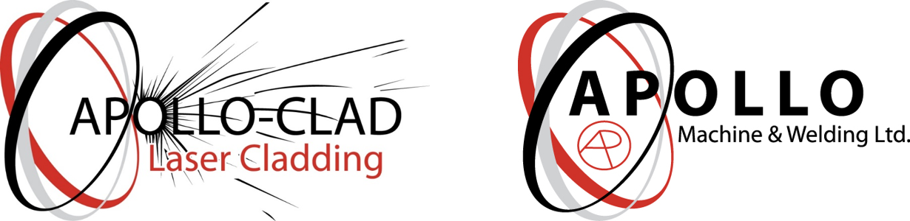
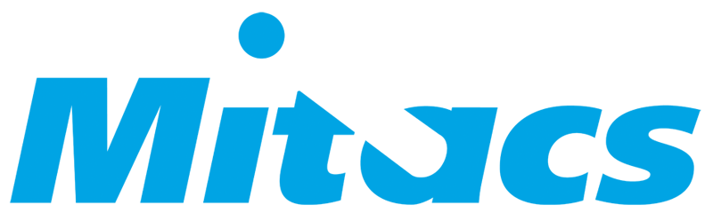
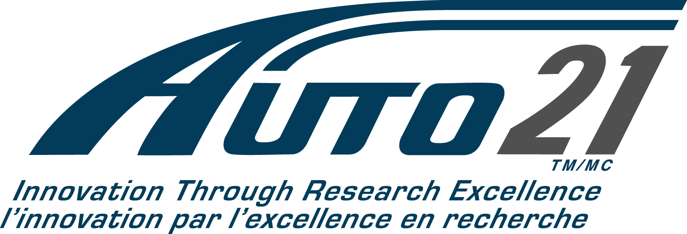
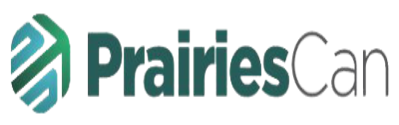
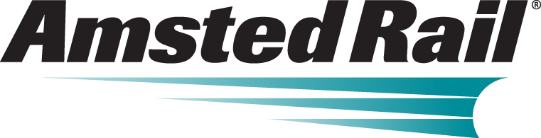
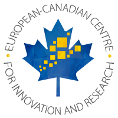
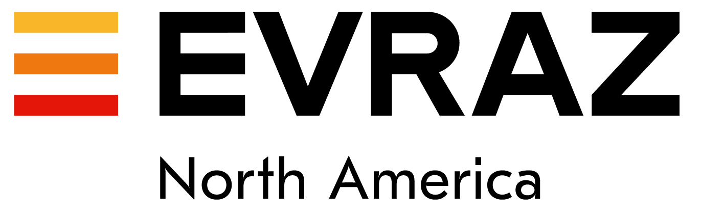

Projects
Processing and Microstructural Development of Wear Protection Coatings Based in the Fe-Cr-C System
This project will look for the first time in a scientific way the metallurgy of chrome carbide overlays. The topic is of much relevance to the Canadian economy because chrome carbide overlays are ubiquitous in the exploitation of natural resources. Increasing demands for quality and performance have resulted in problems in getting some product accepted, and without enough understanding of the fundamentals to make effective decisions about process improvement. The physical complexity of chrome carbide overlays has been beyond what industry could tackle independently, and technical have been made based on borrowed heuristics from white cast iron, which shares somewhat similar chemistry, but very different processing issues. The results of this proposal will enable Canadian manufacturers to understand the particular issues of overlays that affect quality and performance, and to know what can be controlled and how to obtain a world class product within economic constraints.
Wilkinson Steel Samuel, Son & Co.

NSERC

Heat and Mass Transfer Aspects of laser Deposition of Ni/WC Wear Resistant Metal Matrix Composites
This research and training project focuses on developing a model to predict geometry of metallic coatings deposited using laser cladding technology. Laser cladding offers a degree of process control and low heat input necessary for the deposition of high wear resistant metallic coatings used in oil sands processing, mining, logging, and manufacturing of heavy equipment. Models of laser cladding have been developed, but they rely on complex numerical methods and computer simulations. Practitioners of industry have been unable to understand and implement these models in production, and they continue to use a blind trial and error approach to developing procedures for new alloy systems. This project will study for the first time in a scientific and systematic way, the physics that control process and develop mathematical expressions that will explain relationships between the observed phenomena. The approach will rely heavily on the experimental equipment and expertise in weld coatings at the Canadian Centre for Welding and Joining and University of Alberta. Theoretical work will be combined with high speed video analysis and metallography. The results obtained will be of immediate use to the partner company (Apollo Clad) and will have broad applicability to other companies and industries. This proposal will involve the training of one PhD, two MSc, and four undergraduate students.
Apollo Clad

NSERC
Discovery of Governing Laws in Real Multiphysics, Multicoupled Systems in Materials Processing
The proposed program will bridge fundamental concepts with manufacturing applications and will also bridge academic HQP with industrial counterparts. As done in previous years, the HQP and beneficiaries from this work will represent the diverse composition of Canadian society. Materials processing, and its application to manufacturing involves people from all walks of life, united by the common thread of a final product. In welding, the fundamental aspects require understanding of heat transfer, fluid flow, electromagnetics, plasmas, metallurgy, and solid mechanics (all are areas in which the PI has an established track record). The HQP involved in this discovery program will master these concepts, and bring them to industry as future employees, as products, or through knowledge transfer. The people closest to the applications are the welders and welding technologists, with a high proportion of indigenous, women, and visible minorities. The PI has hosted welders, welding students, and other interested members of society as part of the previous discovery proposal. During these visits, the HQP learned how to communicate their learning and findings, and the non-academic members of the project learned the "why" behind many of their practical observations. Perhaps most importantly, barriers and prejudices were replaced by appreciation of complimentary approaches to the same end; in this example, welding of real components. The academic aspect of the proposed program will further the significant theoretical and experimental progress made in the previous Discovery grant, which have been published and received prestigious international awards. The methodologies developed will be of direct help in relating processing, structure, and properties to each other at a quantitative level, with an emphasis on welding, but also including other materials processes such as casting, and metalworking (hot or cold forging, rolling, etc.). Activities in this program will use deep mathematical concepts and a thorough understanding of physics of materials processes to produce reliable guidelines and heuristics that can be used by practitioners in industry and by other researchers. The education objective of this program is to expose future HQP to real-life processes that are very difficult to idealize, and to teach them to distill the essential features of these processes to make quantitative predictions. Beyond the traditional transmission of knowledge through peer-reviewed publications and the classroom, current efforts will be maintained to disseminate learning using the internet by uploading videos and raw data, and social media. The methodologies to be employed are a combination of mathematical modeling and experimental measurements to generate general design rules from fundamental principles. The PI already counts with all necessary software, experimental facilities, and theoretical foundation to develop and bring to practice the methodologies proposed.
NSERC
Wear Protective Overlays for Oil Sands Applications
This project used high speed videography to analyze the metal transfer of tubular Ni/WC wire consumables with the goal of optimizing carbide retention and distribution.
The Stoody Company

Systematic catalog of welding defects
A visual atlas of welding defects (defects introduced in the material do to welding) will also be created to aid the weld quality inspectors, instructors, welders, or anyone taking a welding course identify the source(s) of defects, how to prevent defects from occurring, and how to repair weld defects. The ASTM (American Society for Testing and Materials) passport to steel database and the ASME (American Society of Mechanical Engineers) code interpretation database will be updated to make all the new updated standards and interpretations available to users.
CASTI

Mitacs

Numerical Modelling of Laser Cladding Technology using Pastes and Tapes
Laser cladding is an additive manufacturing technology for applying high-quality metal coatings to parts in order to improve their mechanical wear properties, and thus increase their lifespan. Currently, these metal coatings are created by depositing metal powders on the work piece and welding them together with the laser. A significant amount of powder is lost in this process, which is a large factor in the cost of this type of cladding. This project will use computational modelling to help the industrial partner optimize application parameters for a new deposition method in laser cladding which uses pastes and tapes. These tapes and pastes can help minimize powder loss, increase cladding efficiency, and achieve a higher flexibility in cladding complex part geometries. These improvements will significantly increase the competitiveness of laser cladding, achieve economic feasibility in new areas, and thereby help expand the market share of this advanced technology.
Group Six Technologies

Mitacs
Comparative analysis of real-time weld quality monitoring camera systems working in visible, IR and NIR spectra
Real-time weld monitoring system helps prevent the rejection of large portions of defective welds. It is likely that monitoring camera systems that work in infrared light may be able to reveal some weld defects better than the visible light cameras. The project goal is to perform a comparative experimental study on the ability of the infrared and visible light cameras to detect weld imperfections. The partner organization for this project is Xiris Automation Inc., a company that produces real-time welding control and monitoring systems. The results obtained within this project will help the partner to produce better customers-oriented systems that will increase the productivity of the manufacturing processes of the Canadian industry.
Xiris Inc.

Mitacs
Modelling and optimization of catchment efficiency in coaxial laser cladding
Laser clad overlays are used in production and repair of components that require improved surface characteristics compared to bulk material properties. The use of powder feed enables cladding with complex multi-component systems that offer superior quality and performance. A potential drawback of powder feed is the reduced material usage efficiency compared to traditional wire fed processes. Maximizing powder catchment efficiency is thus essential to ensuring the sustainability and competitiveness of Canadian laser overlay manufacturing. The limitations of traditional trial-and-error methods necessitate an improved understanding of the relationship between process variables and powder catchment that can be generalized to new material systems. The key technical objectives of this project are 1) perform baseline measurements of laser power distribution, powder cloud distribution and process catchment efficiency, 2) develop a general model to relate catchment efficiency with process variables through measured features of the laser beam and powder cloud, 3) utilize the model to identify optimized process variables, and 4) validate the model with experimental comparisons. The methodology employed in this work utilizes state-of-the-art measurement equipment and advanced mathematical modelling techniques. This combined approach will facilitate development of a general procedure capable of designing optimized solutions quickly and efficiently for any given material system.
Apollo Machine
Mitacs
Welding, brazing, consumables, GMAW, copper alloys, aluminum alloys, deposition rate, solidification properties
The scope of the work is to investigate the effect of wire parameters (alloy, size, surface treatment), and process parameters (current, voltage, waveforms) on aluminum metal transfer, with the immediate goal of optimizing wire/process combinations, and the ultimate goal of providing Indalco with the knowledge to develop radically innovative products of currently inexistent properties.
Lincoln Electric Canada

Deposition of abrasion-resistant Ni-WC metal matrix composites using Hot Wire TIG Welding
This work explores using the technology of Hot Wire TIG to deposit Ni/WC wear protection welded overlays. Ni/WC overlays are generally agreed to be the materials with the best cost-performance balance for oil sands extraction and many other mining operations used to benefit from Canada's abundant resources. These overlays are extremely sensitive to overheating in the molten state, resulting in dissolution of the reinforcement with serious detriment to wear performance. The alternatives to creating these wear resistant deposits is to use a technique called plasma transferred arc welding (PTAW) which involves expensive capital equipment, relatively low productivity, and lack of flexibility for out of position and field repair applications. The proposed investigation aims at exploring a technology of lower capital costs than PTA, with much higher potential for productivity, and with same or better wear performance. The challenge resides in understanding the process conditions, which have never been tackled before. This involves extensive experimentation, heat transfer, fluid flow, and thermodynamic analysis, as well as metallographic and electron microscopy analysis. The impact of this work is high, with the possibility of enabling small and medium enterprises to expand their offer of services and products into a very profitable market. This will position Canadian industries in a competitive position worldwide in the manufacturing of mining equipment. This project is and expansion of promising research work developed under an NSERC Engage grant.
Hitachi Canada Industries

NSERC
Tailor-Welded Blank Manufacturing of Mg Alloy Parts
Friction stir-welding parameters for microstructure optimization of simple geometry Mg-alloy joints will be determined. Previously published parameters for Mg-alloys will be used as a starting point, and preliminary welding trials will be performed on combinations of cast, rolled, and forged AZ alloys prepared in different starting microstructural states, and refined to produce optimum joint properties by using a design of experiment test. The material flow and strain rates in the stir zone will be determined using a combination of temperature measurement and microstructure analysis. Detailed microscopy and temperature measurements from embedded thermocouples will determine the possibility of liquid penetration induced cracking at the upper range of the operating window, and the tool forces and energy input will be measured using a six axis load cell.
Ford
Auto21

Heat and Mass Transfer Phenomena in the Application of Wire-Based Nickel/Tungsten Carbide Overlays
This research and training project focuses on developing a new technology to create wear-resistant metallic surfaces used in operations of oil sands, mining, logging, and manufacturing of heavy equipment. Existing technologies can obtain appropriate performance using a combination of nickel matrix and tungsten carbide hard particles as reinforcement; however, existing technologies are slow and expensive. This project will study for the first time in a systematic, scientific way the extension of an existing welding technology (Gas Metal Arc Welding) to create a protective nickel/tungsten carbide coating. The approach will involve an experimental capability available at the University of Alberta and that is unique in the world. Theoretical work and mathematical modeling, as well as metallography and wear testing will also be performed. The results obtained will be of immediate use to the partner company (Syncrude) and will have a broad applicability to other companies and industries. This proposal will involve the training of one MS student and four undergraduate students.
Syncrude

NSERC
Development of Laser Processing Facility for Wear and Corrosion Protection Materials
A laser facility is proposed for the research and education on four areas critical to the manufacturing of goods used in natural resource exploitation: 1) Production of wear resistant coatings, 2) Production of corrosion resistant coatings, 3) Rebuild and repair of expensive equipment, and 4) Laser heat treatment of critical components. The coatings referred to are often called "overlays" or "cladding," have a thickness measured in the order of millimeters, and are an integral part of current equipment used in Canada. Current production methods fall short of modern standards of quality and productivity, and are often unable to deal with crucial alloy systems. Elsewhere in the world, laser cladding technologies are established, and a rapidly growing number of companies and startups in Canada are turning to laser cladding too. The proposed laser facility will provide the fundamental research and will also educate and train highly qualified personnel to maintain Canada in a position of leadership and independence in the exploitation of natural resources. The proposed facility will be integrated into the existing Canadian Centre for Welding and joining, where it will benefit from and existing $3M infrastructure.
Canadian Foundation for Innovation (CFI)
Develop an advanced manufacturing system for automated repairs of heavy machine components
A significant component of manufacturing in Alberta is repairs of heavy components. Repairing worn components has significant economic and environmental advantages. Repairing components also enables companies to operate under reduced profit margins, which is a current constraint in Alberta operators of natural resources. Currently, repairs are carried out manually, or through automation that requires manual programming. The requirement of manual intervention slows down the process significantly making repairs less appealing. We propose to develop an infrastructure in which the programming of the robot is automated, such that parts can be repaired with a minimum of human intervention. This would involve a hardware, software, and training system in which an incoming part is scanned to generate a digital duplicate of the part to be repaired, a robot program will be created based on this information, and the weld-repair parameters are automatically selected to guarantee optimal performance of the component once back in the field.
PrairiesCan

Group Six Technologies KUKA Octopuz Weldco
Reinforcing Steels
The project will investigate the metallurgical structures and hardness properties of what are described as “non-load bearing” weld joints in reinforcing steel. These are proposed to connect reinforcing steel bars in the required configuration to be placed into concrete forms and cast into concrete structures. Two joint configurations shall be evaluated, a cross joint for bars intersecting at right angles and a lap joint as described in the attached document ‘Tack Welding of Reinforcement Bar’ published by the Welding Technology Institute of Australia, document TGN-BC-01.
CWB Welding Foundation

Frank Roberts & Associates
Structure-Processing Relationships for Welding New Steels with Small Alloying Additions
The proposed research will address practical problems of weldability which are encountered by the industry on a daily basis when determining the feasibility of welding certain alloys, the need for heat treatment, or the potential for cracking. The welding of steel is currently based mostly on an accumulation of empirical knowledge, and quantitative use of fundamental knowledge of phase transformations and processing phenomena is rare. While the current empirical base of knowledge has been helpful with traditional steels, it is unable to provide reliable guidelines for modern steels which have small amounts of alloying elements that affect the microstructure. Among the steels not well understood for welding are fire-resistant steels, seismic steels, high grade microalloyed pipeline steels, and traditional structural steels with microalloying elements accepted in the new revised standards. Current troubleshooting efforts in industry aim at expanding the empirical knowledge base by trial and error, which is a slow, expensive, and wasteful approach when it needs to be repeated across multiple applications. The scientific objective of the proposed work is to predict the properties of a weld such as hardness, strength, residual stresses, or cold cracking susceptibility by using weld parameters accessible in practice such as current, voltage power, travel speed, heat input, and deposition rate. The project approach is simultaneously theoretical and experimental. The theoretical part involves metallurgy and heat and mass transport, and theories of phase transformations, moving heat sources, and mass and energy balances. The experimental part involves metallography and dilatometry, testing of mechanical properties, thermal imaging of welding, and testing of full-scale prototypes. The new knowledge generated will be transferred to Canadian industry as a set of reliable, quantitative guidelines for best practices in the design of weldments for steels with current compositions. Canadian industry will benefit from expanded abilities to deal with new steels, faster development of welding procedures, and a capability to weld with higher quality and higher productivity.
CWB WF LJ Welding Weldco
NSERC
Parametric Optimization Study Aluminum Welding
The scope of the work is to investigate the effect of alloy, surface treatment, and waveforms on aluminum metal transfer, with the ultimate goal of determining the smoothest/most stable metal transfer for specific alloys and waveforms.
Indalco Alloys
Multimedia-enabled Welding Helmet for Teaching and Welder Evaluation
We propose to create a welding helmet with a built-in camera which is suitable to be worn by a welder and capture the weld in real time, with the appropriate magnification, focus, and image quality. The ultimate goal of this helmet will be to enable video and audio recording, and two-way live communication during instruction from a remote location.
CLAC

A novel laser-assisted hot-wire metal deposition technique for extreme applications
One of the most promising areas in manufacturing is what is called “advanced manufacturing,” which commonly refers to the new possibilities offered by lasers and additive manufacturing processes. While this technology is well-established in polymers (“3D printing”), applying this technique to metals brings challenges that significantly affect the feasibility on an industrial scale in manufacturing. This project focuses on a specific subset of the area of additive manufacturing, and targets the repair of parts that have been worn out in extreme applications. Such applications include the resource-based industries that experience extreme abrasion in hard-rock mining and oilsands extraction, extreme high-speed wood cutting, and the manufacturing of composites for the aerospace industry, including hot-stages of thrust-vectoring nozzles. The repair welds that take a worn part and bring it back to its original shape have been demonstrated to be very effective, as they can improve the material properties beyond those of the original part, while also reducing the environmental impact. Two main technologies are used in this approach, one involving the deposition of layers (e.g. laser cladding), and another the buildup of 3D structures (e.g. additive manufacturing). However, as each part is unique, the process of making such repairs is currently labour intense, and new processes for 3D scanning and programming the welds are necessary to make the technology economically feasible for more industries. The project will develop novel techniques and processes to scan, program, and weld such parts. The complexities of the project stem from the required combination of part localization, identification and quantification of the damaged part with robust 3D reconstruction and comparison using 3D point-cloud data information, and the tool path planning based on the material behavior. The intrinsic properties of metals during the deposition process results in material transformations and residual stresses throughout the newly deposited material, which require a thorough investigation, and need to be taken into consideration in the toolpath planning. The goal is to create an automated system with Industry 4.0 capabilities that controls the process parameters (laser power, speed, and trajectories) to obtain optimal procedures and properties. Furthermore, the latest generation wear resistant alloys based on Inconel and tungsten carbide technology will be tested and evaluated to further improve material properties. The target industries include manufacturing and the whole range of resource-based industries (e.g. mining, agriculture, forestry, oil & gas).
Group Six Technologies
NSERC
Mechanical and Metallurgical Implications of Non-Ideal Geometry in Circumferential Pipeline Welds
This research and training project focuses on developing a model to predict root defects in pipeline welds with non-ideal joint geometry. Deviations from ideal joint geometry exist due to a variety of unavoidable causes including manufacturing tolerances on pipe dimensions and thermal distortion of the weld joint during the welding process. To address these concerns, industrial practitioners rely heavily on historical experience and established guidelines with limited scientific basis and an unknown range of applicability. This project will study, for the first time in a scientific and systematic way, the mechanisms that relate root defects to variation in joint geometry. The approach will rely heavily on the experimental equipment and mathematical modelling expertise at the Canadian Centre for Welding and Joining at the University of Alberta. The proposal will involve the training of three MSc and six undergraduate students. Experimental techniques, computational weld modelling, and advanced analysis techniques will be utilized together to guide the development of a generalized model applicable to non-ideal welded joints. The results of the project will be of immediate use to the partner company (Enbridge), and will provide all Canadian pipeline operators and fabricators with the information and knowledge necessary to produce high quality, reliable, and economical welded joints the first time, every time.
Enbridge GoldakTec MSC Software
NSERC
Developing an innovative, cost and quality advantageous approach to manufacturing and repair railroad wheels.
The goals of this partnership are to investigate the use of plasma transfer arc welding (PTAW) and laser cladding to make composite and functionally graded railroad wheels. A secondary goal is to explore the use of PTAW and laser cladding to repair railroad wheels. The expected outcome of this partnership is an innovative type of railroad wheel that has never existed in two centuries of railroad. An expected secondary outcome is the repair of wheels that are currently discarded once the allowance for machining have been reached. Repairs will bring significant economic and environmental savings.
Amsted Rail

Apollo Clad
NSERC
Developing a quantitative model of hydrogen through the complete production cycle of heat-treated, high-carbon grinding and SAG product
The scope of the work is to model hydrogen content in the product as it goes through the processing steps, accounting simultaneously for the effects of time and temperature. This integrated model will benefit from multiple approaches as needed, with faster (but coarser) analysis for stages of low influence, and more detailed (but also more time-consuming) analysis for the stages of higher expected influence.
AltaSteel

DynaDur – Development and deposition of highly durable coating for dynamic-abrasive environments
The companies DURUM and Group Six, as well as the research institutes CCWJ of the University of Alberta and F/T of BTU C-S have teamed up to develop and manufacture highly wear-resistant coatings for components simultaneously undergoing abrasion and impact wear. In order to achieve this goal material development, process optimization, and laboratory testing will be carried out. This project will study new alloy systems and novel material delivery methods in conjunction with laser welding sources, and optimize deposition parameters to reduce crack propagation, to allow for the creation of laser-welded coatings superior to any coatings currently in use.
Group Six Technologies DURUM BTU Brandenburg-Cottbus
ECCIR

ERW Bondline Flaw Formation Mechanisms
During the ERW process, molten metal on the edge surfaces is oxidized and can remain in the final bond plane as oxide inclusions called penetrators. Penetrators are typically rich in Mn and Si, since these are strong oxidize formers present in the skelp. Previous research by other ERW pipe manufacturers have focused on two different means of modeling and preventing penetrator formation. However, the influence of penetrator characteristics, such as size, location, composition, and dispersion, on total CVN energy has not been quantified. Furthermore, the influence of penetrator characteristics on absorbed energy have not been separated into fracture initiation vs fracture propagation components. To understand the acceptable penetrator characteristics for a given CVN specification, the influence of penetrator characteristics must be known and then incorporated into the process control and nondestructive testing systems.
Evraz NA
